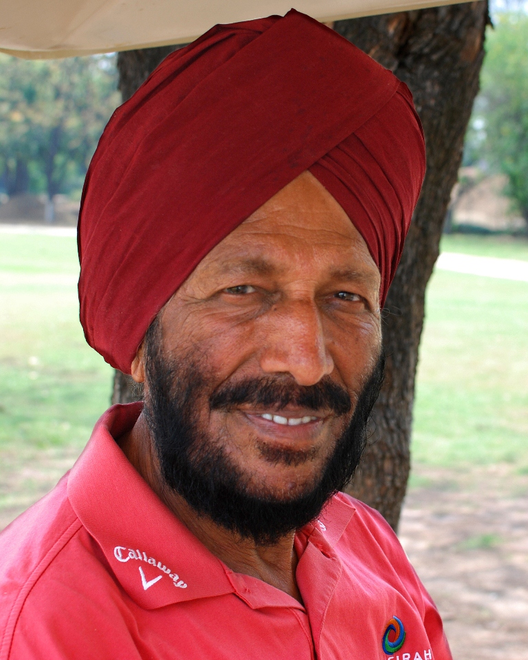

The Flying Sikh
Milkha Singh (20 November 1929 – 18 June 2021), also known as "The Flying Sikh", was an Indian track and field sprinter who was introduced to the sport while serving in the Indian Army. He is the only athlete to win gold at 400 metres at the Asian Games as well as the Commonwealth Games. He has won gold medals in the 1958 and 1962 Asian Games. He represented India in the 1956 Summer Olympics in Melbourne, the 1960 Summer Olympics in Rome and the 1964 Summer Olympics in Tokyo. He was awarded the Padma Shri, India's fourth-highest civilian honour, in recognition of his sporting achievements.
Biographies
- Milkha Singh was promoted to a junior commissioned officer after his success in the 1958 Asian Games.
- He became the Director of Sports in the Punjab Ministry of Education.
- Milkha Singh’s medals were displayed at the Jawaharlal Nehru Stadium in New Delhi, but later shifted to a sports museum in Patiala.
- He donated a pair of Adidas shoes worn on the 400m final in 1960 to a charity auction in 2012.
- Milkha Singh’s wax statue, created at Madame Tussauds in London, was unveiled in September 2017 in Chandigarh.
- ‘Bhaag Milkha Bhaag’, directed by Rakeysh Omprakash Mehra and starring Farhan Akhtar and Sonam Kapoor, portrayed Milkha Singh’s biography.